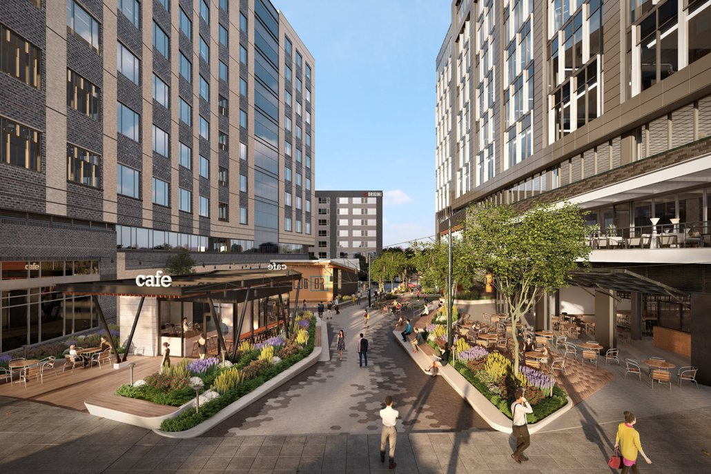
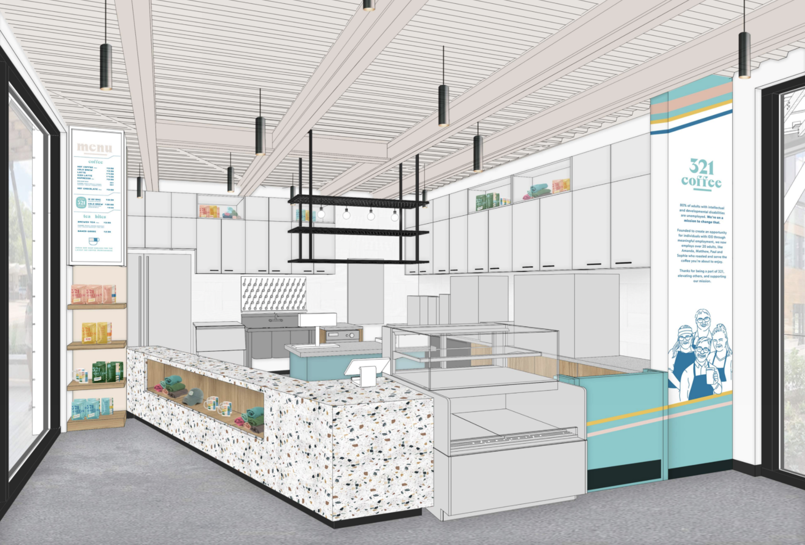
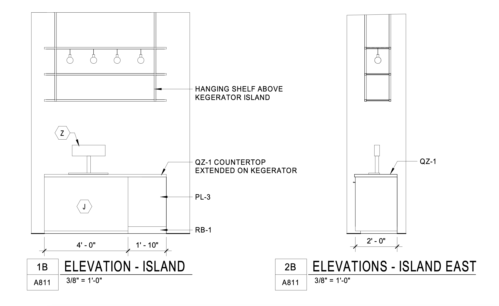

Crafting tailored designs to elevate local businesses.
321 Coffee commissioned Laut Design to provide a hanging shelf for their new coffee shop in downtown Raleigh. 321 Coffee are a local business that provides opportunities for individuals with intellectual and developmental disabilities. The piece was custom-made, fabricated and painted in Laut Design's fabrication workshop.
 www.321coffee.com